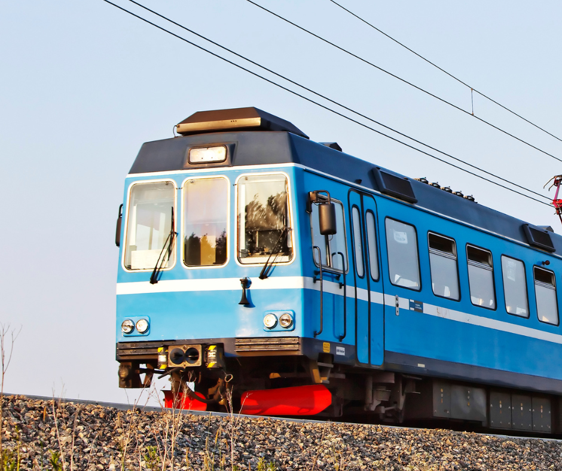

Chapter 1
Bulgaria, by train
The Balkan Express
23 to 30 June 2025Ride trains across the Balkans with young entrepreneurs and changemakers who are building their futures with their own hands.
EntrepreneurshipApplications closedRead the story